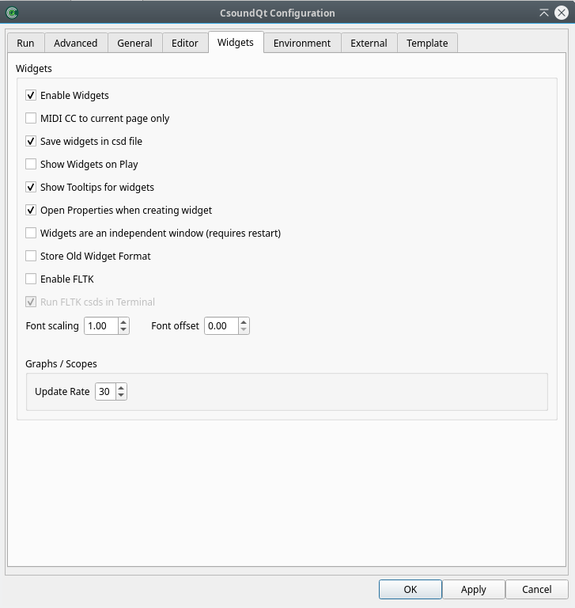

The Widgets Tab

Enable Widgets
If not checked, you cannot use any of CsoundQt's widgets.
Save Widgets in csd file
Each csd file has a section for widgets and presets. These sections are hidden when you open your csd file in CsoundQt, but are visible in any text editor. So if you do not have checked this option, you will not see any of your widgets the next time you open your csd. So, only useful if you want to export a csd without the widget tags.
Show Widgets on play
If checked, the widget panel will pop up each time you push the Play button.
Show tooltips for widgets
Enables a useful feature which lets you see the channel name of a widget if you stay a moment on it with the computer mouse.
Enable FLTK
FLTK means a built-in (and somehow outdated) method of using widgets in Csound. As these widgets could conflict with CsoundQt's own widgets, you will usually uncheck this.
Open properties when creating widgets
Usually you will this have ticked, to enter your channel name and other properties when you create a widget.
Widgets are an independent window
CsoundQt consists of many subwindows except the main Editor panel: the Console, the Help (Manual), the Inspector, and so on. If you check this option, the widget panel will not be considered as one of them, but as independent window. This means that you cannot dock it by double-clicking on the top, like all the other subwindows, but it may have advantages anyhow, depending on your operating system and your configuration.
Font scaling / Font offset
Affects the way the fonts are shown for instance in a Label widget.